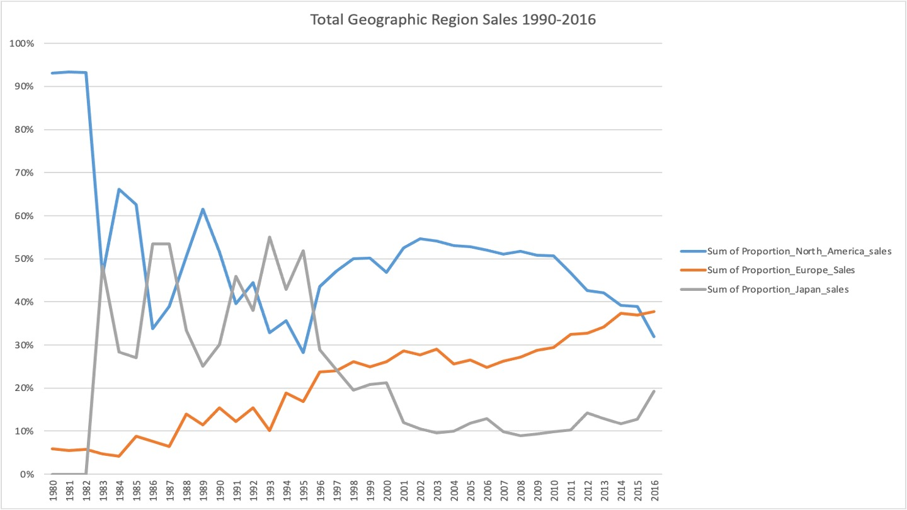
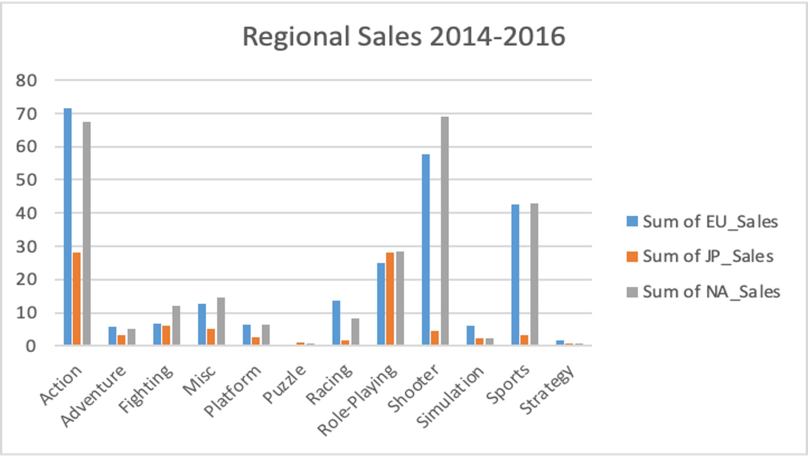

GameCO - Excel Project
Backgroud
Game Co's, a new video game company, understanding of sales is that the various geographic regions have stayed the same over time. Whether this is the case or not, the marketing budget needs to be redistributed among the regions in order to maximie return on investment
Objective
Perform a descriptive analysis of a video game data set to inform about the development of GameCo's new games on the market
Data
Historical Sales of Video games spanning different platforms,genres, and publishing Studios
Source
Steps for Creating the GameCO Strategy
| Steps |
Description |
| 1 |
Data Exploration(Profiling & Cleaning Data) |
| 2 |
Grouping & Summarizing Data using Pivot Tables |
| 3 |
Descriptive Analysis |
| 4 |
Visualizing Data Insights using Excel |
| 5 |
Presenting Results |
GameCo Key insights

How have the sales varied bewteen Geographic regions over time?
I Constructed this lien chart using Ecel Pivot Table to examine Whether sales group varied overtime by geographic Region.
- Sales show a high level of Volatility in Japan Sales and NA regions 1996
- Europe Sales maintained a steady incline sales from 1920-2016
- North America sales were the greatest. But in 2008 the sales started to decline in North America
- The Data Points show a considerable change in sales over time all geographical areas
>

What Genre is the most popular for each Region?
- EU became the industry leader in Action,Adventure,Racing,Strategy,Simulation and Sports
- Europe sales is gaining populartiy in sales
- NA are still leading in Fighting,Misc,Platform,Role playing and Shooter
- The company should start Investing in Europe because the recent trend in sales increase
Final Recomendations
- We know that Video games don't remain the same given their uncertainty. It changes overtime quickly
- We need to bring the most popular sales given each Genre for the Region. So we can maximize the sales. Instead of distibuting our resources
- Europe is increasing in sales in all Different Genre. It would be good idea to put more resources in that Region. Since it show us that Eu is gaining populatiy for games
Links
Project Brief
PowerPoint Presentation